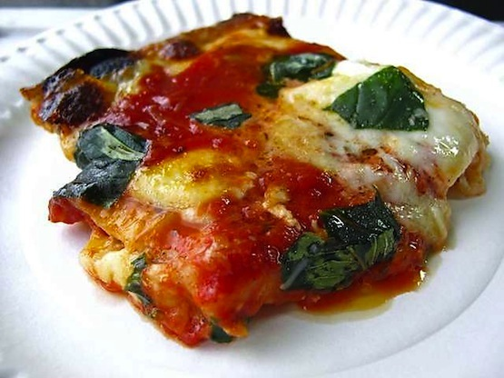
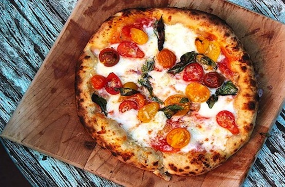
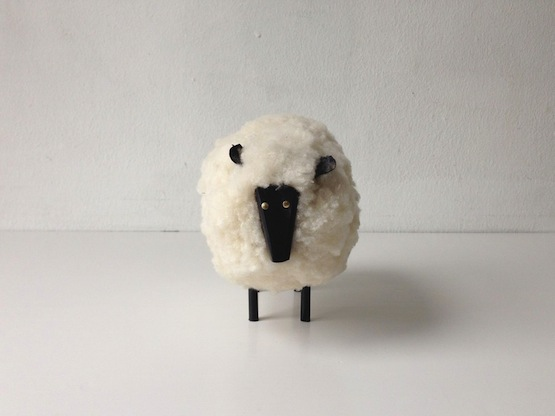
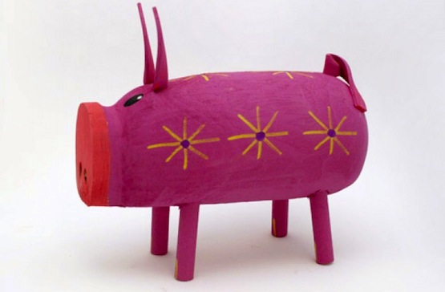

Here I am during the peak of the Winter Vortex, protected by several layers of serious winter gear
More Winter PicsPizza: one of my favorite things
My all time favorite is the square slice from difara's in Brooklyn. It's hand made by the owner himself! Their regular pie is not too shabby either.
 Quirky fact: I collect Navajo Folk Art
Here pics are pics of my two favorites The Sheep and The Pig.
 How it All Began
My love for pizza really flourished during college while attending NYU. I was given an article from Time Magazine, listing all of the top slices from around the 5 boros. I made comittment to try em all, and one day I hope to complete the task. As for the folk art- well I just like it. The pieces make me smile, which is reason enough for me :-). I have family out west in Arizona, which is where I was first exposed to Navajo art. Since then, I have been adding to my collection .
Want to chat about pizza or folk art?
Call me: 1-555-666-7777
Email us: pizza@folkart.com
I'll be announcing new pizza and art finds through Facebook & Twitter


© 2014 Pizza Inc. All Rights Reserved.